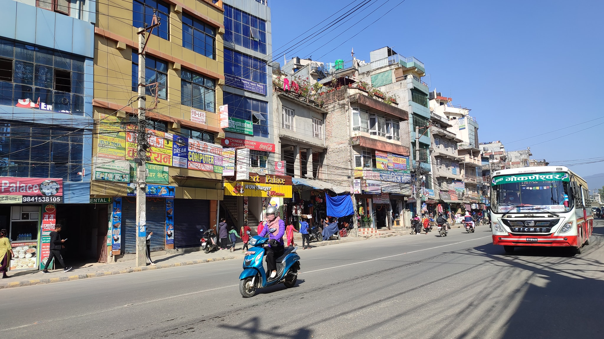

My Birth Place:

Chabahil, one of the most important historical place in Kathmandu, Nepal is famous for its Licchavi stupa,
called the Charumati Vihara.The stupa is considered by many historians to be the oldest Buddhist Stupa in Kathmandu Valley.
According to the inscriptions found in the stupa, the stupa was built by the famous Indian princess Charumati.